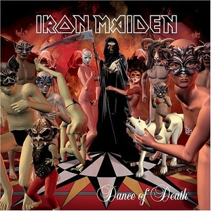

Let me tell you a story to chill the bones
About a thing that I saw
One night wandering in the everglades
I'd one drink but no more
I was rambling, enjoying the bright moonlight
Gazing up at the stars
Not aware of a presence so near to me
Watching my every move
Feeling scared and I fell to my knees
As something rushed me from the trees
Took me to an unholy place
And that is where I fell from grace
Then they summoned me over to join in with them
To the dance of the dead
In to the circle of fire I followed them
Into the middle I was led
As if time had stopped still
I was numb with fear, but still, I wanted to go
And the blaze of the fire did no hurt upon me
As I walked on to the coals
Then I felt I was in a trance
And my spirit was lifted from me
And if only someone had the chance
To witness what happened to me
And I danced and I pranced and I sang with them
All had death in their eyes
Lifeless figures they were undead all of them
They had ascended from hell
As I danced with the dead
My free spirit was laughing and howling down at me
Below my undead body just danced the circle of death
Until the time came to reunite us both
My spirit came back down to me
I didn't know if I was alive or dead
As the others all joined in with me